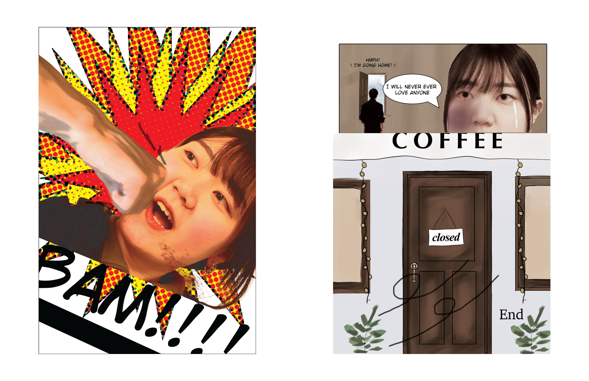
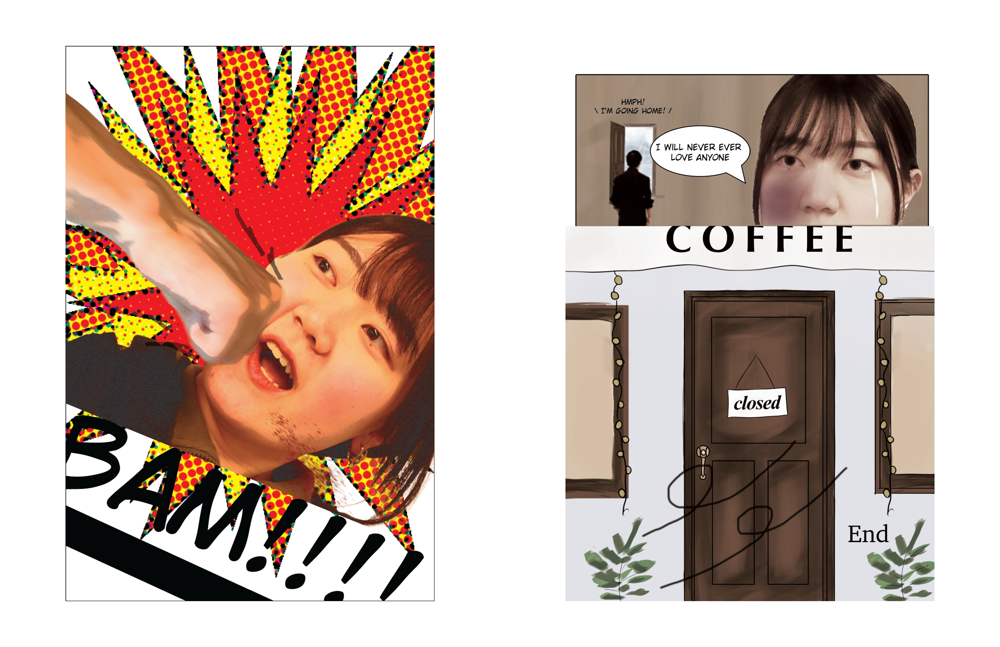

Witches'loaves by o henly
課題の背景（教授の意図）
この課題は、学生に グラフィックノベルという形式を通じて、時間に沿った視覚的ストーリーテリングの基礎 を学ばせるために出されました。 教授の狙いは、既存の文学作品や映像作品を題材にしながらも、構図・演出・タイポグラフィの選択によって独自の表現を創り出す力 を養うことにありました。 また、物語の一部を「見せる／語る／省略する」という編集的な判断を通して、ナラティブアーク（起承転結）の設計力 を培うことが目的でした。 さらに、制作過程での調査・ラフスケッチ・レイアウト検討を通じて、プロセスを記録・分析する姿勢 も重視されました。
自分たちのテーマ解釈
私はこの課題を「既存の物語を、視覚的かつ独自の解釈で再構築する挑戦」と解釈しました。 題材として選んだのは、O・ヘンリーの短編小説 『Witches' Loaves（魔女のパン）』 です。 その世界観を踏まえながらも、ページ構成・イラストスタイル・トーン を工夫し、オリジナルな演出を目指しました。
役割分担
私の担当
- 写真撮影を行い、自らも作品のキャラクターの一部として登場
- 背景やエフェクトを描き、物語の雰囲気を強化
- 写真構成の企画・検討
チームメイトの担当
- 写真構成の企画・検討
- パネルの形やレイアウトのデザイン
- 写真撮影を行い、作品のキャラクターの一部として登場
独自性の工夫
この課題では通常、写真のみを素材として用いることが一般的です。しかし私たちは独自性を高めるために、 自分たちで撮影した写真と手描きイラストを組み合わせるハイブリッド表現を取り入れました。イラストはすべて ibisPaint で制作し、 キャラクターの線画や演出にオリジナリティを追求しました。また、チームワークの観点からも工夫を行いました。 私は絵の制作を担当し、チームメイトは編集スキルを活かすことで、写真のリアルさとイラストの柔軟な表現力を掛け合わせた独自の ビジュアルスタイルを実現しました。この“コンビネーション技”によって、既存の課題形式にはない新鮮な仕上がりを目指しました。
 

リサーチ・アイデア発想

原作『Witches’ Loaves』を分析し、物語の核心である「小さな行動の誤解」を現代的に置き換えることを発想の軸としました。 舞台をカフェに設定し、女性を店員、男性を学生や社会人とすることでロマンスコメディとして再構築。原作での「パンにバターを塗る」 という行為は「コーヒーの出し間違い」に変換しつつ、一部のコマにパンを小道具として登場させることで原作へのリスペクトを残しました。
ワイヤーフレーム
最初のラフスケッチでは、物語の流れをどうパネルで表現するかに重点を置きました。特に「告白」「誤解」「拒絶」といった感情の変化を、 色彩やパネル構成でどう強調するかを試行しました。デジタルスケッチの段階では以下のようなフィードバックを受け、改善を重ねました。 ロマンスコメディらしさを出すため、恋愛シーンではピンクなど明るい色を、拒絶シーンでは彩度を落とすなど色彩のコントラストを工夫する。 各パネルの背景を描き込み、シーンの臨場感を高める。効果音（ドアの音など）を加えて演出を強化する。 四角形の枠にとらわれず、シーンごとにパネル形状を変える（重なり、ギザギザ、波形など）。 キャラクターをパネルの外にはみ出させ、動きや迫力を演出する。テキストや余白（ガター）を活かして、読みやすい順序で物語が流れるように調整する。 これらを試行錯誤することで、単なる直線的なレイアウトから、感情や物語の緩急を強調できる構成へと発展させることができました。
使用した素材

作品の雰囲気を深めるために、画材の写真を活かして感情的な背景を構築することに力を注ぎました。
デザインの工夫
カフェの雰囲気をリアルに伝えるため、入口・内装・外観それぞれに工夫を施しました。入口では爽やかで清涼感のある印象を意識し、内装にはコーヒーマシンなどの 要素を取り入れて作品のテーマ性を強調しました。外観では黄色やオレンジの色彩を使い、昼間のシーン設定によって明るく親しみやすい雰囲気を演出しました。
レファレンス
作品の雰囲気を深めるために、画材の写真を活かして感情的な背景を構築することに力を注ぎました。
学びと振り返り
この課題を通じて、視覚的ストーリーテリングは単に絵を並べるだけでなく、色彩・パネル構成・効果音・テキストの配置といった複数の要素が総合的に働くことで 読者に感情を伝える ということを学びました。特に、ロマンスコメディというジャンルを意識して色彩を切り替えたり、パネル形状を工夫することで、 物語の雰囲気を強く演出できることを実感しました。一方で、背景描写やキャラクターの動きの表現にはまだ改善の余地があり、 シーンごとの緊張感や雰囲気を十分に伝えることが難しいと感じました。次に取り組む際は、背景の描き込みやキャラクターの表情・ポーズのバリエーションを増やし、 より豊かな表現を目指したいと考えています。プロセス全体を振り返ると、フィードバックを受けて試行錯誤を重ねる過程そのものが大きな学びになりました。 「自分のアイデアを一度形にし、批評を受けて改善する」ことの重要性を体感できたことが、このプロジェクトの最大の成果だと思います。